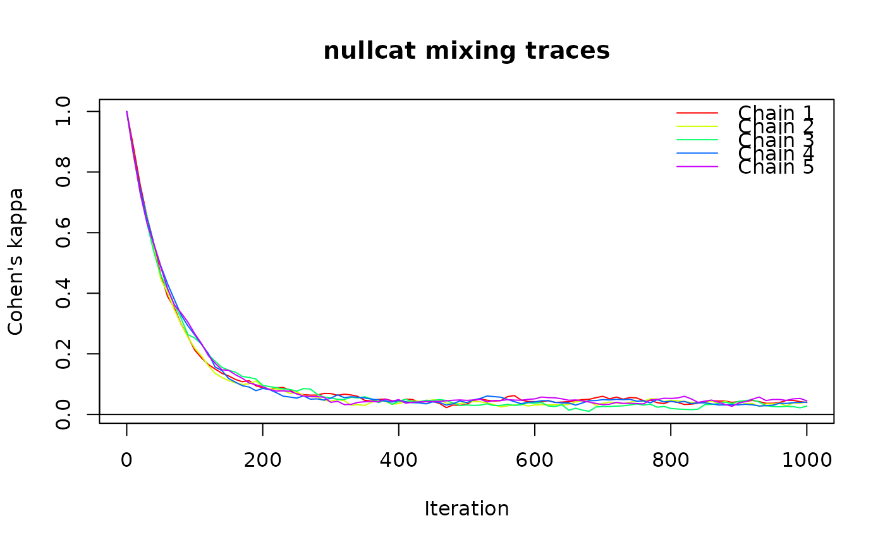
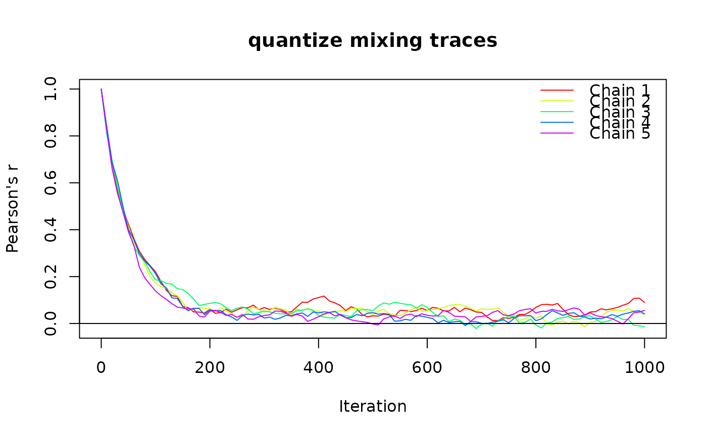

Applies nullcat() or quantize() to a community matrix, recording
a summary statistic at each iteration to help assess mixing on a given dataset.
Usage
trace_cat(
x,
fun = c("nullcat", "quantize"),
n_iter = 1000L,
thin = NULL,
n_chains = 5L,
n_cores = 1L,
stat = NULL,
seed = NULL,
plot = FALSE,
...
)Arguments
- x
Matrix of categorical data (integers) or quantitative values.
- fun
Which function to trace:
"nullcat"or"quantize".- n_iter
Total number of update iterations to simulate. Default is 1000.
- thin
Thinning interval (updates per recorded point). Default ~
n_iter/100. Smaller values increase resolution but increase run time.- n_chains
Number of independent chains to run, to assess consistency (default 5).
- n_cores
Parallel chains (default 1).
- stat
Function that compares
xto a permutedx_randto quantify their similarity. Either a functionf(x, x_rand)returning a scalar, orNULL. IfNULL(the default), traces use Cohen's kappa for nullcat or Pearson's correlation for quantize.- seed
Optional integer seed for reproducible traces.
- plot
If TRUE, plot the traces.
- ...
Arguments to the chosen
fun(nullcat()orquantize_batch()), such asmethod,n_strata,fixed, etc.
Value
An object of class "cat_trace" with elements:
traces: matrix of size (n_steps+1) x n_chains, including iteration 0steps: integer vector of iteration numbers (starting at 0)fun,n_iter,thin,n_chains,n_cores,stat_name,callfun_args: list of the...used (for reproducibility)
Plotting is available via plot(cat_trace).
Examples
# nullcat trace
set.seed(123)
x <- matrix(sample(1:5, 2500, replace = TRUE), 50)
tr <- trace_cat(x, n_iter = 1000, n_chains = 5, fun = "nullcat",
method = "curvecat")
plot(tr)

# quantize trace
x <- matrix(runif(2500), 50)
tr <- trace_cat(x, n_iter = 1000, n_chains = 5, fun = "quantize",
method = "curvecat", n_strata = 3, fixed = "cell")
plot(tr)
